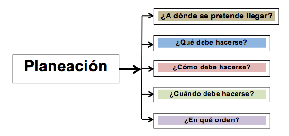

PLANEACION
La planeación es la primera etapa que debe ejercer el cuerpo administrativo de una empresa. Aquí es donde serán previstos los objetivos y metas que deberá cumplir la empresa y los métodos a llevar a cabo.
La relación entre el personal trabajador y el personal administrativo debe ser complementaria para el funcionamiento correcto de la empresa y el cumplimiento de sus objetivos.
En la planeación, se debe desarrollar un plan que contenga las diferentes actividades futuras que se van a realizar y dicho plan deberá implementarse en el plazo dispuesto.
 |